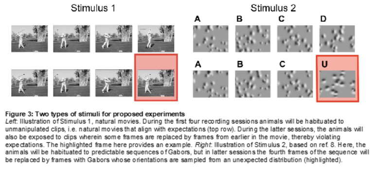

OpenScope’s Dendritic Coupling Dataset#
Predictive coding hypotheses posit that perception is an active process whereby brain regions predict incoming sensory inputs, against which they are compared by other neural populations. Mismatches between predictions and inputs result in error signals that can then be used to update the predictive model encoded in synaptic weights, thereby driving plasticity. Although increasing amounts of evidence are consistent with the general framework, many different algorithmic implementations have been proposed, requiring further experiments to test specific corollaries of these varied approaches. One important, testable implication distinguishing some current theories involves the coupling strength in L2/3 and L5 pyramidal neurons between distal apical dendrites, which tend to receive top-down inputs that may include sensory prediction data, and their conjoined somata, which are often driven by bottom-up inputs. In particular, error signals are computed or else collocated in apical dendrites in some implementations, resulting in a quiescent subunit when the prediction matches inputs—zero error—and, thus, reduced dendro-somatic coupling during such times. In contrast, a separate proposal implies the opposite: Since many apical dendritic voltage signals can only reach their electrotonically segregated soma when facilitated by bursting induced by concurrent somatic sensory inputs, dendro-somatic coupling would instead be strongest when top-down predictions match bottom-up signals.
Our experiment seeks to test these hypotheses by near-simultaneously imaging L2/3 and L5 somata and distal apical dendrites in mouse V1, LM, PM, and AM in transgenic lines that express GCaMP6f. Imaging four distinct areas allows us to also examine the consistency of the coupling rules, further putting the notion of a cortical canonical microcircuit to the test. By habituating animals to sets of visual stimuli with spatiotemporal patterns that are subsequently violated, we can evaluate the neural responses across the visual cortical hierarchy to help in adjudicating these important neuroscientific questions.

Environment Setup#
⚠️Note: If running on a new environment, run this cell once and then restart the kernel⚠️
import warnings
warnings.filterwarnings('ignore')
try:
from databook_utils.dandi_utils import dandi_download_open
except:
!git clone https://github.com/AllenInstitute/openscope_databook.git
%cd openscope_databook
%pip install -e .
%cd docs/projects
import os
import matplotlib as mpl
import matplotlib.pyplot as plt
import numpy as np
import pandas as pd
from mpl_interactions import hyperslicer
from scipy import interpolate
from scipy.stats import ttest_ind
%matplotlib inline
The Experiment#
For this release of Dendritic Coupling, Openscope has pre-released just 2 mice on the DANDI Archive. The following table gives a summary of all the files from those two mice in this dataset. Eight files are produced from each experimental session, one for each imaging plane, and six sessions are conducted with each mouse, totalling 96 files for this dandiset. This table was generated from Getting Experimental Metadata from DANDI.
session_files = pd.read_csv("../../data/dc_sessions.csv")
session_files
| identifier | size | path | session_time | session_id | experiment_id | container_id | group | group_count | imaging_depth | location | fov_height | fov_width | specimen_name | sex | age | genotype | stim_types | n_rois | session_end | |
|---|---|---|---|---|---|---|---|---|---|---|---|---|---|---|---|---|---|---|---|---|
| 0 | 2b16c329-a2f2-44c0-917f-d2485eca5fb7 | 4008765509 | sub-644972/sub-644972_ses-1238929581-acq-12391... | 2023-01-11 16:33:05.503000+00:00 | 1238929581 | 1239101628 | 0 | 3 | 4 | 288 | VISpm | 512 | 512 | 644972 | M | P162.0D | Rbp4-Cre_KL100/wt;Camk2a-tTA/wt;Ai93(TITL-GCaM... | {'movie_flower_rev_fwd_presentations', 'movie_... | None | 3937.19637 |
| 1 | c1a7d88e-2a7d-463e-a73d-b46eaea61593 | 1079474009 | sub-644972/sub-644972_ses-1237338784-acq-12378... | 2023-01-04 16:58:58.862000+00:00 | 1237338784 | 1237809217 | 0 | 0 | 4 | 20 | VISp | 512 | 512 | 644972 | M | P155.0D | Rbp4-Cre_KL100/wt;Camk2a-tTA/wt;Ai93(TITL-GCaM... | {'spontaneous_presentations', 'rotate_gabors_p... | 6 | 3941.94600 |
| 2 | dff85610-18b0-4d72-8ebd-5639516fe0b7 | 1073642857 | sub-644972/sub-644972_ses-1237338784-acq-12378... | 2023-01-04 16:58:58.862000+00:00 | 1237338784 | 1237809220 | 0 | 1 | 4 | 25 | VISam | 512 | 512 | 644972 | M | P155.0D | Rbp4-Cre_KL100/wt;Camk2a-tTA/wt;Ai93(TITL-GCaM... | {'spontaneous_presentations', 'rotate_gabors_p... | 1 | 3941.94600 |
| 3 | ee3b7520-6ac7-49ea-88b3-022d5be7816b | 1069138065 | sub-644972/sub-644972_ses-1237338784-acq-12378... | 2023-01-04 16:58:58.862000+00:00 | 1237338784 | 1237809223 | 0 | 2 | 4 | 30 | VISl | 512 | 512 | 644972 | M | P155.0D | Rbp4-Cre_KL100/wt;Camk2a-tTA/wt;Ai93(TITL-GCaM... | {'spontaneous_presentations', 'rotate_gabors_p... | None | 3941.94600 |
| 4 | a81fd01e-36be-4eff-a3f1-379201a95bf4 | 1144934234 | sub-644972/sub-644972_ses-1237338784-acq-12378... | 2023-01-04 16:58:58.862000+00:00 | 1237338784 | 1237809219 | 0 | 0 | 4 | 295 | VISp | 512 | 512 | 644972 | M | P155.0D | Rbp4-Cre_KL100/wt;Camk2a-tTA/wt;Ai93(TITL-GCaM... | {'spontaneous_presentations', 'rotate_gabors_p... | 62 | 3941.94600 |
| ... | ... | ... | ... | ... | ... | ... | ... | ... | ... | ... | ... | ... | ... | ... | ... | ... | ... | ... | ... | ... |
| 91 | 42b35234-d4dd-49cb-85c2-08a201ce826e | 4041517083 | sub-656228/sub-656228_ses-1247233186-acq-12473... | 2023-02-14 21:44:00.768000+00:00 | 1247233186 | 1247385130 | 0 | 0 | 4 | 152 | VISp | 512 | 512 | 656228 | M | P109.0D | Cux2-CreERT2/wt;Camk2a-tTA/wt;Ai93(TITL-GCaMP6... | {'movie_flower_rev_fwd_presentations', 'movie_... | 25 | 3943.08654 |
| 92 | 9661ce3c-372a-4f00-8db8-a68184fbc607 | 4014625264 | sub-656228/sub-656228_ses-1247233186-acq-12473... | 2023-02-14 21:44:00.768000+00:00 | 1247233186 | 1247385137 | 0 | 3 | 4 | 46 | VISpm | 512 | 512 | 656228 | M | P109.0D | Cux2-CreERT2/wt;Camk2a-tTA/wt;Ai93(TITL-GCaMP6... | {'movie_flower_rev_fwd_presentations', 'movie_... | 2 | 3943.08654 |
| 93 | aace7ef8-742f-4382-b53d-938e30c25fc9 | 4014619723 | sub-656228/sub-656228_ses-1247233186-acq-12473... | 2023-02-14 21:44:00.768000+00:00 | 1247233186 | 1247385131 | 0 | 1 | 4 | 50 | VISam | 512 | 512 | 656228 | M | P109.0D | Cux2-CreERT2/wt;Camk2a-tTA/wt;Ai93(TITL-GCaMP6... | {'movie_flower_rev_fwd_presentations', 'movie_... | 2 | 3943.08654 |
| 94 | 667eb4f7-88ab-4d19-bfc1-3f9e789f5c20 | 4043804172 | sub-656228/sub-656228_ses-1247233186-acq-12473... | 2023-02-14 21:44:00.768000+00:00 | 1247233186 | 1247385136 | 0 | 2 | 4 | 144 | VISl | 512 | 512 | 656228 | M | P109.0D | Cux2-CreERT2/wt;Camk2a-tTA/wt;Ai93(TITL-GCaMP6... | {'gratings_presentations', 'movie_touch_of_evi... | 27 | 3943.08654 |
| 95 | 8f9bd3ef-120d-4f5c-9498-ec79d477d447 | 4016954448 | sub-656228/sub-656228_ses-1247233186-acq-12473... | 2023-02-14 21:44:00.768000+00:00 | 1247233186 | 1247385128 | 0 | 0 | 4 | 42 | VISp | 512 | 512 | 656228 | M | P109.0D | Cux2-CreERT2/wt;Camk2a-tTA/wt;Ai93(TITL-GCaMP6... | {'gratings_presentations', 'movie_touch_of_evi... | 4 | 3943.08654 |
96 rows × 20 columns
n_sessions = len(session_files["session_id"].value_counts())
subjects_info = session_files.groupby(["specimen_name", "sex"]).size().reset_index().to_dict()
m_count = len([sex for sex in subjects_info["sex"].values() if sex == "M"])
f_count = len([sex for sex in subjects_info["sex"].values() if sex == "F"])
print("Dandiset Overview:")
print(len(session_files), "files")
print(len(subjects_info["specimen_name"]), "subjects", m_count, "males", f_count,"females")
Dandiset Overview:
96 files
2 subjects 2 males 0 females
Downloading Ophys File#
dandiset_id = "000871"
dandi_filepath = "sub-656228/sub-656228_ses-1245548523-acq-1245937736_image+ophys.nwb"
download_loc = "."
# This can sometimes take a while depending on the size of the file
io = dandi_download_open(dandiset_id, dandi_filepath, download_loc)
nwb = io.read()
PATH SIZE DONE DONE% CHECKSUM STATUS MESSAGE
sub-656228_ses-1245548523-acq-1245937736_image+ophys.nwb 4.0 GB 4.0 GB 100% ok done
Summary: 4.0 GB 4.0 GB 1 done
100.00%
Downloaded file to ./sub-656228_ses-1245548523-acq-1245937736_image+ophys.nwb
Opening file
Imaging Data#
Our Ophys files include lab metadata and imaging_planes objects which ential the information about the location being imaged, shown below.
nwb.lab_meta_data
{'metadata': metadata abc.OphysMetadata at 0x1696900265824
Fields:
experiment_container_id: 0
field_of_view_height: 512
field_of_view_width: 512
imaging_depth: 144
imaging_plane_group: 3
imaging_plane_group_count: 4
ophys_experiment_id: 1245937736
ophys_session_id: 1245548523}
nwb.imaging_planes
{'imaging_plane_1': imaging_plane_1 pynwb.ophys.ImagingPlane at 0x1696900258672
Fields:
conversion: 1.0
description: (512, 512) field of view in VISpm at depth 144 um
device: MESO.2 pynwb.device.Device at 0x1696900258000
Fields:
description: Allen Brain Observatory - Mesoscope 2P Rig
excitation_lambda: 910.0
imaging_rate: 10.0
indicator: GCaMP6f
location: VISpm
optical_channel: (
channel_1 <class 'pynwb.ophys.OpticalChannel'>
)
unit: meters}
Stimulus Templates#
The files for the Dendritic Coupling project contain the movies used as visual stimulus, referred to as stim templates. The project contain three main stimulus movies with regular forward playback. Some files in the project, such as this one, have reverse, forward-reverse, and reverse-forward versions as well. Below, screenshots from each of the movies are displayed, and one of the movies can be played embedded within this notebook. The key used can be changed to view different stim templates.
nwb.stimulus_template.keys()
dict_keys(['flower_fwd', 'flower_fwd_rev', 'flower_rev', 'flower_rev_fwd', 'touch_of_evil_fwd', 'touch_of_evil_fwd_rev', 'touch_of_evil_rev', 'touch_of_evil_rev_fwd', 'worms_fwd', 'worms_fwd_rev', 'worms_rev', 'worms_rev_fwd'])
n_cols = 4
n_rows = 3
fig, axes = plt.subplots(n_rows, n_cols, figsize=(n_cols*8, n_rows*4))
if len(axes.shape) == 1:
axes = axes.reshape((1, axes.shape[0]))
for i, template_name in enumerate(nwb.stimulus_template.keys()):
template_img = nwb.stimulus_template[template_name].data[:,:,0]
template_img = np.rot90(template_img, k=3)
ax_row = int(i / n_cols)
ax_col = i % n_cols
axes[ax_row][ax_col].imshow(template_img, cmap="gray")
axes[ax_row][ax_col].set_title(template_name, fontsize=8)
for ax in axes.flat:
ax.xaxis.set_ticks([])
ax.yaxis.set_ticks([])
fig.tight_layout()
%matplotlib ipympl
plt.tick_params(left=False, bottom=False, labelleft=False, labelbottom=False)
# change this key to view other stim template movies
template_key = "flower_fwd_rev"
template = nwb.stimulus_template[template_key].data
template = np.transpose(template)
view = hyperslicer(template, play_buttons=True, cmap="gray")
Selecting Stimulus Times#
nwb.intervals.keys()
dict_keys(['fixed_gabors_presentations', 'gratings_presentations', 'movie_flower_fwd_presentations', 'movie_flower_fwd_rev_presentations', 'movie_flower_rev_fwd_presentations', 'movie_flower_rev_presentations', 'movie_touch_of_evil_fwd_presentations', 'movie_touch_of_evil_fwd_rev_presentations', 'movie_touch_of_evil_rev_fwd_presentations', 'movie_touch_of_evil_rev_presentations', 'movie_worms_fwd_presentations', 'movie_worms_fwd_rev_presentations', 'movie_worms_rev_fwd_presentations', 'movie_worms_rev_presentations', 'rotate_gabors_presentations', 'spontaneous_presentations'])
stim_table = nwb.intervals["movie_worms_fwd_rev_presentations"]
print(stim_table.colnames)
stim_table[:10]
('start_time', 'stop_time', 'stimulus_name', 'stimulus_block', 'frame', 'color', 'contrast', 'opacity', 'orientation', 'size', 'units', 'stimulus_index', 'tags', 'timeseries')
| start_time | stop_time | stimulus_name | stimulus_block | frame | color | contrast | opacity | orientation | size | units | stimulus_index | tags | timeseries | |
|---|---|---|---|---|---|---|---|---|---|---|---|---|---|---|
| id | ||||||||||||||
| 0 | 133.87838 | 133.91170 | movie_worms_fwd_rev | 7.0 | 0.0 | [1.0, 1.0, 1.0] | 1.0 | 1.0 | 0.0 | [1920.0, 1080.0] | pix | 10.0 | [stimulus_time_interval] | [(6000, 2, timestamps pynwb.base.TimeSeries at... |
| 1 | 133.91170 | 133.94513 | movie_worms_fwd_rev | 7.0 | 1.0 | [1.0, 1.0, 1.0] | 1.0 | 1.0 | 0.0 | [1920.0, 1080.0] | pix | 10.0 | [stimulus_time_interval] | [(6002, 2, timestamps pynwb.base.TimeSeries at... |
| 2 | 133.94513 | 133.97842 | movie_worms_fwd_rev | 7.0 | 2.0 | [1.0, 1.0, 1.0] | 1.0 | 1.0 | 0.0 | [1920.0, 1080.0] | pix | 10.0 | [stimulus_time_interval] | [(6004, 2, timestamps pynwb.base.TimeSeries at... |
| 3 | 133.97842 | 134.01179 | movie_worms_fwd_rev | 7.0 | 3.0 | [1.0, 1.0, 1.0] | 1.0 | 1.0 | 0.0 | [1920.0, 1080.0] | pix | 10.0 | [stimulus_time_interval] | [(6006, 2, timestamps pynwb.base.TimeSeries at... |
| 4 | 134.01179 | 134.04522 | movie_worms_fwd_rev | 7.0 | 4.0 | [1.0, 1.0, 1.0] | 1.0 | 1.0 | 0.0 | [1920.0, 1080.0] | pix | 10.0 | [stimulus_time_interval] | [(6008, 2, timestamps pynwb.base.TimeSeries at... |
| 5 | 134.04522 | 134.07857 | movie_worms_fwd_rev | 7.0 | 5.0 | [1.0, 1.0, 1.0] | 1.0 | 1.0 | 0.0 | [1920.0, 1080.0] | pix | 10.0 | [stimulus_time_interval] | [(6010, 2, timestamps pynwb.base.TimeSeries at... |
| 6 | 134.07857 | 134.11187 | movie_worms_fwd_rev | 7.0 | 6.0 | [1.0, 1.0, 1.0] | 1.0 | 1.0 | 0.0 | [1920.0, 1080.0] | pix | 10.0 | [stimulus_time_interval] | [(6012, 2, timestamps pynwb.base.TimeSeries at... |
| 7 | 134.11187 | 134.14529 | movie_worms_fwd_rev | 7.0 | 7.0 | [1.0, 1.0, 1.0] | 1.0 | 1.0 | 0.0 | [1920.0, 1080.0] | pix | 10.0 | [stimulus_time_interval] | [(6014, 2, timestamps pynwb.base.TimeSeries at... |
| 8 | 134.14529 | 134.17865 | movie_worms_fwd_rev | 7.0 | 8.0 | [1.0, 1.0, 1.0] | 1.0 | 1.0 | 0.0 | [1920.0, 1080.0] | pix | 10.0 | [stimulus_time_interval] | [(6016, 2, timestamps pynwb.base.TimeSeries at... |
| 9 | 134.17865 | 134.21195 | movie_worms_fwd_rev | 7.0 | 9.0 | [1.0, 1.0, 1.0] | 1.0 | 1.0 | 0.0 | [1920.0, 1080.0] | pix | 10.0 | [stimulus_time_interval] | [(6018, 2, timestamps pynwb.base.TimeSeries at... |
print(np.mean(np.diff(stim_table.start_time)))
print(set(stim_table.frame))
0.4026468757717955
{0.0, 1.0, 2.0, 3.0, 4.0, 5.0, 6.0, 7.0, 8.0, 9.0, 10.0, 11.0, 12.0, 13.0, 14.0, 15.0, 16.0, 17.0, 18.0, 19.0, 20.0, 21.0, 22.0, 23.0, 24.0, 25.0, 26.0, 27.0, 28.0, 29.0, 30.0, 31.0, 32.0, 33.0, 34.0, 35.0, 36.0, 37.0, 38.0, 39.0, 40.0, 41.0, 42.0, 43.0, 44.0, 45.0, 46.0, 47.0, 48.0, 49.0, 50.0, 51.0, 52.0, 53.0, 54.0, 55.0, 56.0, 57.0, 58.0, 59.0, 60.0, 61.0, 62.0, 63.0, 64.0, 65.0, 66.0, 67.0, 68.0, 69.0, 70.0, 71.0, 72.0, 73.0, 74.0, 75.0, 76.0, 77.0, 78.0, 79.0, 80.0, 81.0, 82.0, 83.0, 84.0, 85.0, 86.0, 87.0, 88.0, 89.0, 90.0, 91.0, 92.0, 93.0, 94.0, 95.0, 96.0, 97.0, 98.0, 99.0, 100.0, 101.0, 102.0, 103.0, 104.0, 105.0, 106.0, 107.0, 108.0, 109.0, 110.0, 111.0, 112.0, 113.0, 114.0, 115.0, 116.0, 117.0, 118.0, 119.0, 120.0, 121.0, 122.0, 123.0, 124.0, 125.0, 126.0, 127.0, 128.0, 129.0, 130.0, 131.0, 132.0, 133.0, 134.0, 135.0, 136.0, 137.0, 138.0, 139.0, 140.0, 141.0, 142.0, 143.0, 144.0, 145.0, 146.0, 147.0, 148.0, 149.0, 150.0, 151.0, 152.0, 153.0, 154.0, 155.0, 156.0, 157.0, 158.0, 159.0, 160.0, 161.0, 162.0, 163.0, 164.0, 165.0, 166.0, 167.0, 168.0, 169.0, 170.0, 171.0, 172.0, 173.0, 174.0, 175.0, 176.0, 177.0, 178.0, 179.0, 180.0, 181.0, 182.0, 183.0, 184.0, 185.0, 186.0, 187.0, 188.0, 189.0, 190.0, 191.0, 192.0, 193.0, 194.0, 195.0, 196.0, 197.0, 198.0, 199.0, 200.0, 201.0, 202.0, 203.0, 204.0, 205.0, 206.0, 207.0, 208.0, 209.0, 210.0, 211.0, 212.0, 213.0, 214.0, 215.0, 216.0, 217.0, 218.0, 219.0, 220.0, 221.0, 222.0, 223.0, 224.0, 225.0, 226.0, 227.0, 228.0, 229.0, 230.0, 231.0, 232.0, 233.0, 234.0, 235.0, 236.0, 237.0, 238.0, 239.0, 240.0, 241.0, 242.0, 243.0, 244.0, 245.0, 246.0, 247.0, 248.0, 249.0, 250.0, 251.0, 252.0, 253.0, 254.0, 255.0, 256.0, 257.0, 258.0, 259.0, 260.0, 261.0, 262.0, 263.0, 264.0, 265.0, 266.0, 267.0, 268.0, 269.0}
# flower video reverses around frame 190
rev_stim_select = lambda row: row.frame.item() == 190
rev_stim_times = [float(stim_table[i].start_time) for i in range(len(stim_table)) if rev_stim_select(stim_table[i])]
print(len(rev_stim_times))
15
Extracting ROI Fluorescence#
dff = nwb.processing["ophys"]["dff"]
dff_trace = dff.roi_response_series["traces"].data
dff_timestamps = dff.roi_response_series["traces"].timestamps
print(dff_trace.shape)
print(dff_timestamps.shape)
avg_dff_trace = np.average(dff_trace, axis=1)
(37515, 27)
(37515,)
Session Timeline#
To get a good idea of the order and the way stimulus is shown throughout the session, the code below generates a timeline of the various ‘epochs’ of stimulus. It can be seen that there are many small epochs showing the various stimulus movies in the first half of the session, followed by a long epoch of rotating gabors and then a long epoch of fixed gabors.
# extract epoch times from stim table where stimulus rows have a different 'block' than following row
# returns list of epochs, where an epoch is of the form (stimulus name, stimulus block, start time, stop time)
def extract_epochs(stim_name, stim_table, epochs):
# specify a current epoch stop and start time
epoch_start = stim_table.start_time[0]
epoch_stop = stim_table.stop_time[0]
# for each row, try to extend current epoch stop_time
for i in range(len(stim_table)):
this_block = stim_table.stimulus_block[i]
# if end of table, end the current epoch
if i+1 >= len(stim_table):
epochs.append((stim_name, this_block, epoch_start, epoch_stop))
break
next_block = stim_table.stimulus_block[i+1]
# if next row is the same stim block, push back epoch_stop time
if next_block == this_block:
epoch_stop = stim_table.stop_time[i+1]
# otherwise, end the current epoch, start new epoch
else:
epochs.append((stim_name, this_block, epoch_start, epoch_stop))
epoch_start = stim_table.start_time[i+1]
epoch_stop = stim_table.stop_time[i+1]
return epochs
# extract epochs from all valid stimulus tables
epochs = []
for stim_name in nwb.intervals.keys():
stim_table = nwb.intervals[stim_name]
try:
epochs = extract_epochs(stim_name, stim_table, epochs)
except:
continue
# epochs take the form (stimulus name, stimulus block, start time, stop time)
print(len(epochs))
epochs.sort(key=lambda x: x[2])
for epoch in epochs:
print(epoch)
185
('movie_worms_fwd_presentations', 0.0, 63.82019, 72.82766)
('movie_flower_fwd_presentations', 1.0, 73.82849, 82.83596)
('movie_worms_rev_fwd_presentations', 2.0, 83.83679, 92.84427)
('movie_worms_rev_presentations', 3.0, 93.84511, 102.8526)
('movie_touch_of_evil_rev_fwd_presentations', 4.0, 103.85349, 112.8609)
('movie_flower_fwd_rev_presentations', 5.0, 113.86172, 122.8692)
('movie_touch_of_evil_rev_presentations', 6.0, 123.8701, 132.87751)
('movie_worms_fwd_rev_presentations', 7.0, 133.87838, 142.88589)
('movie_flower_rev_presentations', 8.0, 143.8867, 152.89421)
('movie_flower_rev_fwd_presentations', 9.0, 153.89504, 162.90245)
('movie_touch_of_evil_fwd_presentations', 10.0, 163.90335, 172.91077)
('movie_touch_of_evil_fwd_rev_presentations', 11.0, 173.91166, 182.91914)
('movie_flower_fwd_rev_presentations', 12.0, 183.91991, 192.92746)
('movie_flower_fwd_presentations', 13.0, 193.92822, 202.93571)
('movie_worms_rev_fwd_presentations', 14.0, 203.93658, 212.94401)
('movie_touch_of_evil_rev_presentations', 15.0, 213.94489, 222.95238)
('movie_touch_of_evil_rev_fwd_presentations', 16.0, 223.95321, 232.96067)
('movie_touch_of_evil_fwd_presentations', 17.0, 233.96147, 242.96905)
('movie_worms_rev_presentations', 18.0, 243.96973, 252.97727)
('movie_flower_rev_fwd_presentations', 19.0, 253.97802, 262.98549)
('movie_worms_fwd_presentations', 20.0, 263.98637, 272.99384)
('movie_touch_of_evil_fwd_rev_presentations', 21.0, 273.99461, 283.00207)
('movie_worms_fwd_rev_presentations', 22.0, 284.00291, 293.01036)
('movie_flower_rev_presentations', 23.0, 294.01118, 303.01871)
('movie_touch_of_evil_rev_fwd_presentations', 24.0, 304.01951, 313.02696)
('movie_touch_of_evil_fwd_rev_presentations', 25.0, 314.02777, 323.03522)
('movie_touch_of_evil_fwd_presentations', 26.0, 324.03606, 333.04357)
('movie_touch_of_evil_rev_presentations', 27.0, 334.04441, 343.05179)
('movie_worms_fwd_rev_presentations', 28.0, 344.05262, 353.06008)
('movie_worms_rev_presentations', 29.0, 354.06099, 363.06836)
('movie_flower_fwd_rev_presentations', 30.0, 364.06927, 373.07673)
('movie_flower_rev_fwd_presentations', 31.0, 374.07749, 383.08503)
('movie_worms_rev_fwd_presentations', 32.0, 384.08584, 393.09323)
('movie_flower_rev_presentations', 33.0, 394.09411, 403.10155)
('movie_worms_fwd_presentations', 34.0, 404.10234, 413.10986)
('movie_flower_fwd_presentations', 35.0, 414.11063, 423.11815)
('movie_flower_rev_presentations', 36.0, 424.11892, 433.12645)
('movie_flower_fwd_presentations', 37.0, 434.12729, 443.1347)
('movie_worms_fwd_rev_presentations', 38.0, 444.13552, 453.14303)
('movie_worms_rev_presentations', 39.0, 454.14386, 463.15132)
('movie_touch_of_evil_fwd_rev_presentations', 40.0, 464.15207, 473.15954)
('movie_touch_of_evil_rev_fwd_presentations', 41.0, 474.16038, 483.16782)
('movie_touch_of_evil_fwd_presentations', 42.0, 484.16866, 493.17616)
('movie_worms_fwd_presentations', 43.0, 494.17697, 503.18447)
('movie_touch_of_evil_rev_presentations', 44.0, 504.18523, 513.19278)
('movie_flower_fwd_rev_presentations', 45.0, 514.19359, 523.20098)
('movie_worms_rev_fwd_presentations', 46.0, 524.20188, 533.20935)
('movie_flower_rev_fwd_presentations', 47.0, 534.21017, 543.21763)
('movie_worms_fwd_rev_presentations', 48.0, 544.21846, 553.22592)
('movie_flower_fwd_presentations', 49.0, 554.22667, 563.23422)
('movie_touch_of_evil_fwd_rev_presentations', 50.0, 564.23505, 573.24243)
('movie_touch_of_evil_fwd_presentations', 51.0, 574.24333, 583.25071)
('movie_worms_fwd_presentations', 52.0, 584.25162, 593.259)
('movie_flower_rev_presentations', 53.0, 594.25991, 603.2673)
('movie_worms_rev_presentations', 54.0, 604.26813, 613.2756)
('movie_touch_of_evil_rev_presentations', 55.0, 614.27641, 623.28387)
('movie_touch_of_evil_rev_fwd_presentations', 56.0, 624.28478, 633.29224)
('movie_flower_rev_fwd_presentations', 57.0, 634.29302, 643.30053)
('movie_flower_fwd_rev_presentations', 58.0, 644.30136, 653.30874)
('movie_worms_rev_fwd_presentations', 59.0, 654.30959, 663.31713)
('movie_flower_fwd_presentations', 60.0, 664.31794, 673.3254)
('movie_worms_fwd_presentations', 61.0, 674.3262, 683.33361)
('movie_touch_of_evil_fwd_rev_presentations', 62.0, 684.33444, 693.34198)
('movie_touch_of_evil_rev_fwd_presentations', 63.0, 694.34284, 703.35019)
('movie_worms_rev_fwd_presentations', 64.0, 704.35102, 713.35855)
('movie_flower_rev_fwd_presentations', 65.0, 714.35934, 723.36684)
('movie_worms_fwd_rev_presentations', 66.0, 724.36768, 733.37515)
('movie_touch_of_evil_rev_presentations', 67.0, 734.37589, 743.38341)
('movie_flower_fwd_rev_presentations', 68.0, 744.38424, 753.39164)
('movie_touch_of_evil_fwd_presentations', 69.0, 754.39254, 763.39993)
('movie_worms_rev_presentations', 70.0, 764.40076, 773.40829)
('movie_flower_rev_presentations', 71.0, 774.40912, 783.41651)
('movie_flower_fwd_presentations', 72.0, 784.41734, 793.42487)
('movie_touch_of_evil_rev_presentations', 73.0, 794.42562, 803.43311)
('movie_flower_rev_presentations', 74.0, 804.43393, 813.44144)
('movie_worms_rev_fwd_presentations', 75.0, 814.4423, 823.44974)
('movie_flower_rev_fwd_presentations', 76.0, 824.45057, 833.45798)
('movie_touch_of_evil_rev_fwd_presentations', 77.0, 834.45886, 843.46628)
('movie_touch_of_evil_fwd_rev_presentations', 78.0, 844.46715, 853.47461)
('movie_worms_rev_presentations', 79.0, 854.47544, 863.4829)
('movie_worms_fwd_presentations', 80.0, 864.48366, 873.49119)
('movie_flower_fwd_rev_presentations', 81.0, 874.49202, 883.49943)
('movie_worms_fwd_rev_presentations', 82.0, 884.50026, 893.5077)
('movie_touch_of_evil_fwd_presentations', 83.0, 894.5086, 903.51606)
('movie_worms_rev_fwd_presentations', 84.0, 904.51688, 913.52428)
('movie_flower_fwd_presentations', 85.0, 914.52511, 923.53263)
('movie_touch_of_evil_rev_fwd_presentations', 86.0, 924.53346, 933.54088)
('movie_touch_of_evil_rev_presentations', 87.0, 934.54171, 943.54921)
('movie_worms_fwd_rev_presentations', 88.0, 944.55006, 953.55751)
('movie_worms_fwd_presentations', 89.0, 954.55827, 963.56573)
('movie_touch_of_evil_fwd_rev_presentations', 90.0, 964.56656, 973.57403)
('movie_worms_rev_presentations', 91.0, 974.57493, 983.58232)
('movie_flower_rev_presentations', 92.0, 984.58321, 993.59067)
('movie_flower_fwd_rev_presentations', 93.0, 994.59142, 1003.59895)
('movie_flower_rev_fwd_presentations', 94.0, 1004.59978, 1013.60718)
('movie_touch_of_evil_fwd_presentations', 95.0, 1014.608, 1023.61551)
('movie_touch_of_evil_rev_fwd_presentations', 96.0, 1024.6163, 1033.62383)
('movie_worms_fwd_rev_presentations', 97.0, 1034.62465, 1043.63211)
('movie_touch_of_evil_fwd_presentations', 98.0, 1044.63288, 1053.64041)
('movie_worms_fwd_presentations', 99.0, 1054.64124, 1063.64863)
('movie_flower_fwd_rev_presentations', 100.0, 1064.64954, 1073.65698)
('movie_flower_rev_presentations', 101.0, 1074.65783, 1083.66528)
('movie_worms_rev_presentations', 102.0, 1084.6661, 1093.67357)
('movie_worms_rev_fwd_presentations', 103.0, 1094.67433, 1103.6819)
('movie_flower_rev_fwd_presentations', 104.0, 1104.68268, 1113.69008)
('movie_touch_of_evil_rev_presentations', 105.0, 1114.69097, 1123.69841)
('movie_flower_fwd_presentations', 106.0, 1124.69933, 1133.70673)
('movie_touch_of_evil_fwd_rev_presentations', 107.0, 1134.70755, 1143.71494)
('movie_worms_rev_fwd_presentations', 108.0, 1144.71577, 1153.72324)
('movie_flower_rev_fwd_presentations', 109.0, 1154.72406, 1163.73158)
('movie_worms_fwd_rev_presentations', 110.0, 1164.73242, 1173.73986)
('movie_touch_of_evil_fwd_rev_presentations', 111.0, 1174.74064, 1183.74818)
('movie_touch_of_evil_rev_fwd_presentations', 112.0, 1184.749, 1193.75639)
('movie_touch_of_evil_rev_presentations', 113.0, 1194.75726, 1203.76475)
('movie_worms_rev_presentations', 114.0, 1204.76557, 1213.77304)
('movie_flower_rev_presentations', 115.0, 1214.77387, 1223.78133)
('movie_worms_fwd_presentations', 116.0, 1224.78209, 1233.78963)
('movie_flower_fwd_presentations', 117.0, 1234.79044, 1243.79785)
('movie_touch_of_evil_fwd_presentations', 118.0, 1244.79867, 1253.8062)
('movie_flower_fwd_rev_presentations', 119.0, 1254.80704, 1263.81449)
('movie_flower_rev_fwd_presentations', 120.0, 1264.81532, 1273.82281)
('movie_worms_rev_presentations', 121.0, 1274.82354, 1283.83107)
('movie_touch_of_evil_rev_fwd_presentations', 122.0, 1284.8319, 1293.83931)
('movie_touch_of_evil_rev_presentations', 123.0, 1294.8402, 1303.84758)
('movie_touch_of_evil_fwd_presentations', 124.0, 1304.84847, 1313.85594)
('movie_touch_of_evil_fwd_rev_presentations', 125.0, 1314.85679, 1323.8642)
('movie_worms_rev_fwd_presentations', 126.0, 1324.865, 1333.87249)
('movie_flower_rev_presentations', 127.0, 1334.87332, 1343.88074)
('movie_worms_fwd_rev_presentations', 128.0, 1344.88161, 1353.8891)
('movie_worms_fwd_presentations', 129.0, 1354.88986, 1363.89732)
('movie_flower_fwd_rev_presentations', 130.0, 1364.89822, 1373.90561)
('movie_flower_fwd_presentations', 131.0, 1374.90651, 1383.9139)
('movie_flower_fwd_presentations', 132.0, 1384.9148, 1393.92226)
('movie_touch_of_evil_fwd_presentations', 133.0, 1394.9231, 1403.93054)
('movie_touch_of_evil_fwd_rev_presentations', 134.0, 1404.93133, 1413.93885)
('movie_flower_rev_fwd_presentations', 135.0, 1414.9396, 1423.94711)
('movie_flower_fwd_rev_presentations', 136.0, 1424.94796, 1433.95542)
('movie_touch_of_evil_rev_fwd_presentations', 137.0, 1434.95626, 1443.96367)
('movie_worms_fwd_rev_presentations', 138.0, 1444.96448, 1453.972)
('movie_worms_rev_presentations', 139.0, 1454.97276, 1463.9803)
('movie_touch_of_evil_rev_presentations', 140.0, 1464.98112, 1473.98856)
('movie_worms_fwd_presentations', 141.0, 1474.98941, 1483.99687)
('movie_worms_rev_fwd_presentations', 142.0, 1484.99779, 1494.00509)
('movie_flower_rev_presentations', 143.0, 1495.00599, 1504.01338)
('movie_touch_of_evil_fwd_presentations', 144.0, 1505.01425, 1514.02174)
('movie_touch_of_evil_rev_presentations', 145.0, 1515.0225, 1524.03)
('movie_touch_of_evil_rev_fwd_presentations', 146.0, 1525.03086, 1534.03832)
('movie_flower_rev_presentations', 147.0, 1535.03908, 1544.04654)
('movie_worms_fwd_presentations', 148.0, 1545.04744, 1554.05483)
('movie_flower_fwd_rev_presentations', 149.0, 1555.05573, 1564.06316)
('movie_worms_rev_presentations', 150.0, 1565.06403, 1574.07149)
('movie_worms_fwd_rev_presentations', 151.0, 1575.07232, 1584.07971)
('movie_worms_rev_fwd_presentations', 152.0, 1585.08053, 1594.08806)
('movie_touch_of_evil_fwd_rev_presentations', 153.0, 1595.08889, 1604.09628)
('movie_flower_rev_fwd_presentations', 154.0, 1605.09711, 1614.10464)
('movie_flower_fwd_presentations', 155.0, 1615.10547, 1624.11293)
('movie_worms_rev_presentations', 156.0, 1625.11374, 1634.12124)
('movie_flower_fwd_presentations', 157.0, 1635.12198, 1644.12951)
('movie_worms_fwd_rev_presentations', 158.0, 1645.13034, 1654.13773)
('movie_worms_fwd_presentations', 159.0, 1655.13863, 1664.14609)
('movie_flower_fwd_rev_presentations', 160.0, 1665.14693, 1674.15433)
('movie_flower_rev_presentations', 161.0, 1675.1552, 1684.16259)
('movie_touch_of_evil_fwd_rev_presentations', 162.0, 1685.16342, 1694.17095)
('movie_touch_of_evil_fwd_presentations', 163.0, 1695.17171, 1704.17924)
('movie_touch_of_evil_rev_presentations', 164.0, 1705.18009, 1714.18754)
('movie_flower_rev_fwd_presentations', 165.0, 1715.1883, 1724.19577)
('movie_touch_of_evil_rev_fwd_presentations', 166.0, 1725.1966, 1734.20404)
('movie_worms_rev_fwd_presentations', 167.0, 1735.20494, 1744.2124)
('movie_worms_fwd_presentations', 168.0, 1745.21317, 1754.22062)
('movie_worms_fwd_rev_presentations', 169.0, 1755.22145, 1764.22891)
('movie_touch_of_evil_fwd_rev_presentations', 170.0, 1765.22976, 1774.2372)
('movie_flower_rev_fwd_presentations', 171.0, 1775.2381, 1784.24549)
('movie_worms_rev_presentations', 172.0, 1785.24639, 1794.25385)
('movie_worms_rev_fwd_presentations', 173.0, 1795.25461, 1804.26214)
('movie_touch_of_evil_rev_fwd_presentations', 174.0, 1805.2629, 1814.27036)
('movie_flower_fwd_presentations', 175.0, 1815.27119, 1824.27866)
('movie_flower_fwd_rev_presentations', 176.0, 1825.27948, 1834.28702)
('movie_touch_of_evil_rev_presentations', 177.0, 1835.28777, 1844.29531)
('movie_touch_of_evil_fwd_presentations', 178.0, 1845.29606, 1854.30359)
('movie_flower_rev_presentations', 179.0, 1855.30436, 1864.31181)
('rotate_gabors_presentations', 180.0, 1895.33751, 2345.71065)
('rotate_gabors_presentations', 181.0, 2345.71065, 2796.08381)
('fixed_gabors_presentations', 182.0, 2826.1088, 3276.48193)
('fixed_gabors_presentations', 183.0, 3276.48193, 3726.85508)
('gratings_presentations', 184.0, 3756.87998, 3944.23512)
# can set these manually to get a closer look at the timeline
time_start = min(epochs, key=lambda epoch: epoch[1])[1]
time_end = max(epochs, key=lambda epoch:epoch[2])[2]
# time_start = 3000
# time_end = 3100
# can set this to change what trace is displayed alongside epochs
display_trace = avg_dff_trace * 100 # to yield percentage
# unit_idx = 30
# display_trace = dff_trace[:,unit_idx] * 100
%matplotlib inline
### make plot of chosen fluorescence trace over time with colored epoch sections
fig, ax = plt.subplots(figsize=(15,5))
# filter epochs which aren't at least partially in the time window
bounded_epochs = {epoch for epoch in epochs if epoch[2] < time_end and epoch[3] > time_start}
# assign unique color to each stimulus name
stim_names = list({epoch[0] for epoch in bounded_epochs})
colors = plt.cm.rainbow(np.linspace(0,1,len(stim_names)))
stim_color_map = {stim_names[i]:colors[i] for i in range(len(stim_names))}
epoch_key = {}
y_hi = np.amax(display_trace) # change these to manually set height of the plot
y_lo = np.amin(display_trace)
# draw colored rectangles for each epoch
for epoch in bounded_epochs:
stim_name, stim_block, epoch_start, epoch_end = epoch
color = stim_color_map[stim_name]
rec = ax.add_patch(mpl.patches.Rectangle((epoch_start, y_lo), epoch_end-epoch_start, y_hi, alpha=0.3, facecolor=color))
epoch_key[(stim_name)] = rec
ax.set_xlim(time_start, time_end)
ax.set_ylim(y_lo, y_hi)
ax.set_xlabel("Time (s)")
ax.set_ylabel("Average DF/F (%)")
ax.set_title("Average DFF throughout session")
fig.legend(epoch_key.values(), epoch_key.keys(), loc="lower right", bbox_to_anchor=(1.25, 0.25))
ax.plot(dff_timestamps[:], display_trace)
print(np.amax(avg_dff_trace))
plt.tight_layout()
plt.show()
1.8759732163094385
Viewing Behavioral Data#
Our NWB files also come with several metrics of animal behavior during the session, including running speed and eye tracking. Below is plotted the angle of the eye of the subject over time. The plot can be tailored to create the best view, as there are frequently large outliers in the eye tracking.
eye_tracking = nwb.acquisition["EyeTracking"]
# extract coords from eye tracking array
xs = np.array([point[0] for point in eye_tracking.eye_tracking.data])
ys = np.array([point[1] for point in eye_tracking.eye_tracking.data])
et_start_idx = 0
et_end_idx = len(eye_tracking.eye_tracking.data)
print("Min X:", np.nanmin(xs), "Max X:", np.nanmax(xs))
print("Min Y:", np.nanmin(ys), "Max Y:", np.nanmax(ys))
Min X: -2133.6747116929796 Max X: 380.65425645594405
Min Y: -5975.965894691784 Max Y: 460.3917121054316
fig, ax = plt.subplots()
colors = plt.cm.viridis(np.linspace(0, 1, et_end_idx-et_start_idx))
ax.plot(xs[et_start_idx:et_end_idx], ys[et_start_idx:et_end_idx], zorder=0, linewidth=0.25)
ax.scatter(xs[et_start_idx:et_end_idx], ys[et_start_idx:et_end_idx], s=5, c=colors, zorder=1)
# change these to set the plot limits (there are sometimes unusual outliers)
ax.set_xlim(0,500)
ax.set_ylim(0,500)
ax.set_xlabel("x pixel")
ax.set_ylabel("y pixel")
ax.set_title("Eye Trace Through Time")
plt.show()
Generating Response Windows#
window_start_time = -2
window_end_time = 3
interp_hz = 10
# generate regularly-space x values and interpolate along it
time_axis = np.arange(dff_timestamps[0], dff_timestamps[-1], step=(1/interp_hz))
interp_dff = []
# interpolate channel by channel to save RAM
for channel in range(dff_trace.shape[1]):
f = interpolate.interp1d(dff_timestamps, dff_trace[:,channel], axis=0, kind="nearest", fill_value="extrapolate")
interp_dff.append(f(time_axis))
interp_dff = np.array(interp_dff)
print(interp_dff.shape)
(27, 39414)
# validate window bounds
if window_start_time > 0:
raise ValueError("start time must be non-positive number")
if window_end_time <= 0:
raise ValueError("end time must be positive number")
# get event windows
windows = []
window_length = int((window_end_time-window_start_time) * interp_hz)
for stim_ts in rev_stim_times:
# convert time to index
start_idx = int( (stim_ts + window_start_time - dff_timestamps[0]) * interp_hz )
end_idx = start_idx + window_length
# bounds checking
if start_idx < 0 or end_idx > interp_dff.shape[1]:
continue
windows.append(interp_dff[:,start_idx:end_idx])
if len(windows) == 0:
raise ValueError("There are no windows for these timestamps")
windows = np.array(windows) * 100 # x100 to convert values to dF/F percentage
neuronwise_windows = np.swapaxes(windows,0,1)
print(neuronwise_windows.shape)
(27, 15, 50)
Showing Response Windows#
%matplotlib inline
def show_dff_response(ax, dff, window_start_time, window_end_time, aspect="auto", vmin=None, vmax=None, yticklabels=[], skipticks=1, xlabel="Time (s)", ylabel="ROI", cbar=True, cbar_label=None):
if len(dff) == 0:
print("Input data has length 0; Nothing to display")
return
img = ax.imshow(dff, aspect=aspect, extent=[window_start_time, window_end_time, 0, len(dff)], vmin=vmin, vmax=vmax)
if cbar:
ax.colorbar(img, shrink=0.5, label=cbar_label)
ax.plot([0,0],[0, len(dff)], ":", color="white", linewidth=1.0)
if len(yticklabels) != 0:
ax.set_yticks(range(len(yticklabels)))
ax.set_yticklabels(yticklabels, fontsize=8)
n_ticks = len(yticklabels[::skipticks])
ax.yaxis.set_major_locator(plt.MaxNLocator(n_ticks))
ax.set_xlabel(xlabel)
ax.set_ylabel(ylabel)
def show_many_responses(windows, rows, cols, window_idxs=None, title=None, subplot_title="", xlabel=None, ylabel=None, cbar_label=None, vmin=0, vmax=100):
if window_idxs is None:
window_idxs = range(len(windows))
windows = windows[window_idxs]
# handle case with no input data
if len(windows) == 0:
print("Input data has length 0; Nothing to display")
return
# handle cases when there aren't enough windows for number of rows
if len(windows) < rows*cols:
rows = (len(windows) // cols) + 1
fig, axes = plt.subplots(rows, cols, figsize=(2*cols+2, 2*rows+2), layout="constrained")
# handle case when there's only one row
if len(axes.shape) == 1:
axes = axes.reshape((1, axes.shape[0]))
for i in range(rows*cols):
ax_row = int(i // cols)
ax_col = i % cols
ax = axes[ax_row][ax_col]
if i > len(windows)-1:
ax.set_visible(False)
continue
window = windows[i]
show_dff_response(ax, window, window_start_time, window_end_time, xlabel=xlabel, ylabel=ylabel, cbar=False, vmin=vmin, vmax=vmax)
ax.set_title(f"{subplot_title} {window_idxs[i]}")
if ax_row != rows-1:
ax.get_xaxis().set_visible(False)
if ax_col != 0:
ax.get_yaxis().set_visible(False)
fig.suptitle(title)
norm = mpl.colors.Normalize(vmin=vmin, vmax=vmax)
colorbar = fig.colorbar(mpl.cm.ScalarMappable(norm=norm), ax=axes, shrink=1.5/rows, label=cbar_label)
show_many_responses(neuronwise_windows,
6,
15,
title="Response of Some ROIs across trials",
subplot_title="ROI",
xlabel="time (s)",
ylabel="trial",
cbar_label="$\Delta$F/F (%)")
Selecting Cells#
# get the index within the window that stimulus occurs (time 0)
stimulus_onset_idx = int(-window_start_time * interp_hz)
baseline = windows[:,:,0:stimulus_onset_idx]
evoked_responses = windows[:,:,stimulus_onset_idx:]
print(stimulus_onset_idx)
print(baseline.shape)
print(evoked_responses.shape)
20
(15, 27, 20)
(15, 27, 30)
mean_trial_responses = np.mean(evoked_responses, axis=2)
mean_trial_baselines = np.mean(baseline, axis=2)
n = mean_trial_responses.shape[0]
t,p = ttest_ind(mean_trial_responses, mean_trial_baselines)
IC3_selected_rois = np.where(p < 0.05 / n)[0]
print(f"Selected ROIs {IC3_selected_rois}")
Selected ROIs [ 8 17]
show_many_responses(neuronwise_windows[IC3_selected_rois],
6,
15,
title="Response of Some ROIs across trials",
subplot_title="ROI",
xlabel="time (s)",
ylabel="trial",
cbar_label="$\Delta$F/F (%)")
Viewing Raw Movie#
Although not shown in the metadata table shown above, each one of our session files comes with a copy on DANDI that also includes the actual movies from the brain.
# raw
dandi_movie_filepath = "sub-656228/sub-656228_ses-1245548523-acq-1245937736-raw-movies_image+ophys.nwb"
# denoised
# dandi_movie_filepath = "sub-656228/sub-656228_ses-1245548523-acq-1245937736-denoised-movies_ophys.nwb"
# This can sometimes take a while depending on the size of the file
io = dandi_download_open(dandiset_id, dandi_movie_filepath, download_loc)
nwb = io.read()
PATH SIZE DONE DONE% CHECKSUM STATUS MESSAGE
sub-656228_ses-1245548523-acq-1245937736-raw-movies_image+ophys.nwb 23.7 GB 23.7 GB 100% ok done
Summary: 23.7 GB 23.7 GB 1 done
100.00%
Downloaded file to ./sub-656228_ses-1245548523-acq-1245937736-raw-movies_image+ophys.nwb
Opening file
# start_time = flr_timestamps[0]
start_time = 540
# end_time = flr_timestamps[-1]
end_time = 600
start_idx, end_idx = np.searchsorted(dff_timestamps, [start_time, end_time])
print(start_idx)
print(end_idx)
4823
5394
raw_movie = nwb.acquisition["raw_suite2p_motion_corrected"].data
flr_timestamps = np.array(dff.roi_response_series["traces"].timestamps)
print(raw_movie.shape)
print(flr_timestamps.shape)
(37515, 512, 512)
(37515,)
%matplotlib ipympl
plt.tick_params(left=False, bottom=False, labelleft=False, labelbottom=False)
view = hyperslicer(raw_movie[start_idx:end_idx], play_buttons=True)